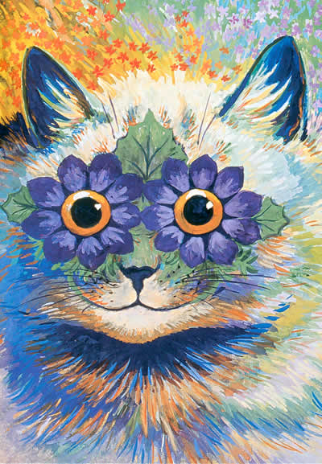
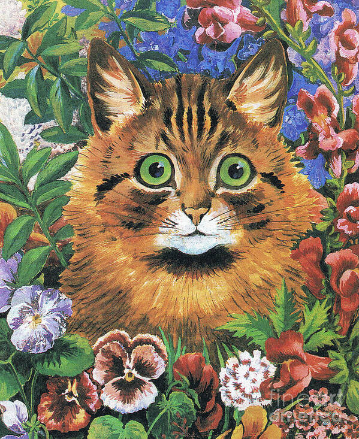
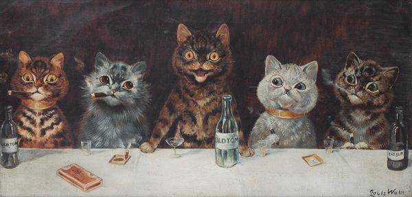

Una cena de gatos

Una de las primeras obras icónicas de Wain, mostrando
lo cotidiano de los gatos.
En 1886 Wain publicó su primer trabajo con gatos humanizados en la edición navideña
del Illustrated London News, donde numerosos gatos aparecían realizando actividades como
enviar invitaciones, jugar con los regalos o pronunciar discursos en una amplia ilustración dividida
en once paneles. Los gatos todavía aparecen a cuatro patas, sin prendas ni expresividad.
Ojos de flor
 Mostrando la fijacion en los gatos.
En 1914, hizo algunas obras de gatos con un diseño futurista, desembocando
en un arte psicodélico. Wain mostró gran flexibilidad a la hora de usar distintas técnicas
y plasmar los acontecimientos que vivió a lo largo de su vida en su obra creando un legado indudable.
Gato entre flores
 Gato floral.
Wain se casó con Emily Richardson, en 1884, una institutriz que
trabajaba en su casa y de quien estaba profundamente enamorado. Al poco tiempo,
Emily fue diagnosticada de cáncer de mama y Wain trató de sobrellevar la situación
de la mejor manera. Además, se servía de sus ilustraciones para alegrar a su esposa.
Consiguió un éxito y fama cada vez mayores. A pesar de ello, esto se tornó agridulce
por el fallecimiento de su esposa pocas semanas después y tras un periodo bastante doloroso.
Gatos bebiendo
 Efectivamente, según Wain, los gatos también beben.
Finalmente, Louis Wain murió a los 79 años un 4 de julio en el centro psiquiátrico.
Su arte felina no sólo dejó un legado para el mundo de los pintores, sino que además
dejó una real evidencia de cómo se desarrolla la esquizofrenia en la mente humana y
como ésta altera las percepciones.